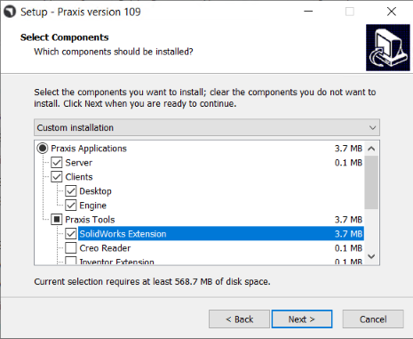
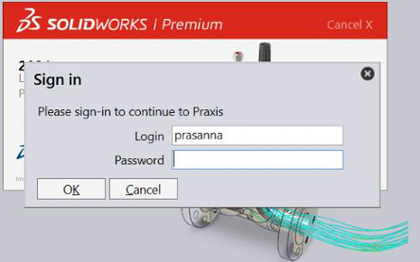
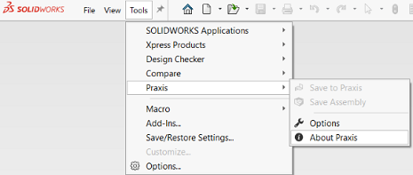
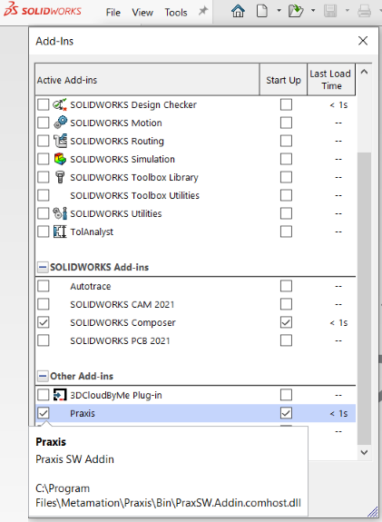

Pre-requisite: The system must have SolidWorks Application installed to test this feature.
● Launch Praxis setup and select SolidWorks Extension option on the components selection page to install the Praxis-SolidWorks add-in 1. (Skip the Server option if add-in is being installed on a Praxis client).
● Finish Praxis installation and make sure Praxis monitor is running in the notification area.
● Launch SolidWorks. It should prompt with the Praxis login dialog at the startup. Enter the password (if required) and press OK to continue to the SolidWorks home tab. Praxis remembers the credentials entered here and uses it from the next session onwards.

● Finish Praxis installation and make sure Praxis monitor is running in the notification area.
● Launch SolidWorks. It should prompt with the Praxis login dialog at the startup. Enter the password (if required) and press OK to continue to the SolidWorks home tab. Praxis remembers the credentials entered here and uses it from the next session onwards.

You can use the tools • praxis • about praxis… SolidWorks command to check and verify the extension.

And use tools • add-ins… dialog to enable/disable it at the SolidWorks startup. (The Praxis add-in is listed under Other Add-ins at the bottom.)
